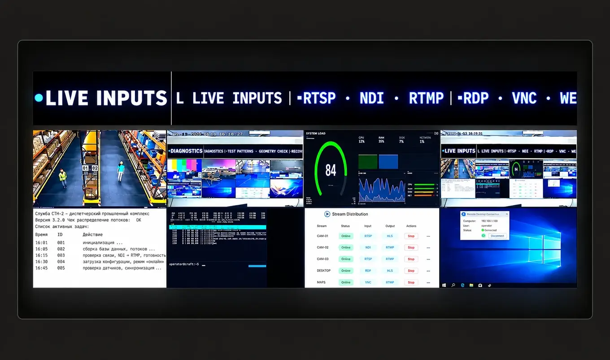

Источники
В Craft Wall любой источник — это окно на полотне. Оператор добавляет источник в пульте, ставит его на стену и, если источник это допускает, работает в нём своей мышью и клавиатурой. Камеры, веб-дашборды, RDP/VNC, NDI, HDMI/SDI-захват, ВКС, документы и видео объединяются на стене. Источник добавляют один раз и используют в любом числе сцен. В списке источников есть категории, поиск и избранное.